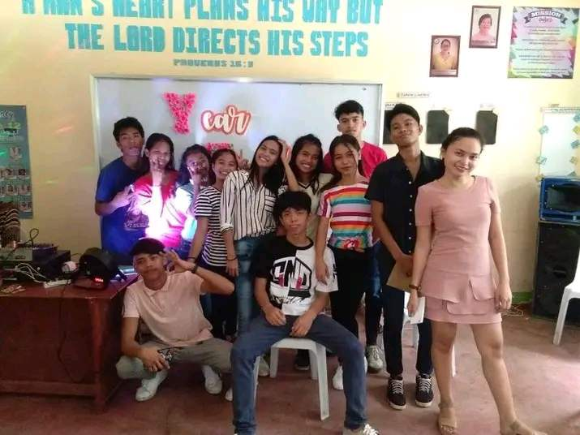
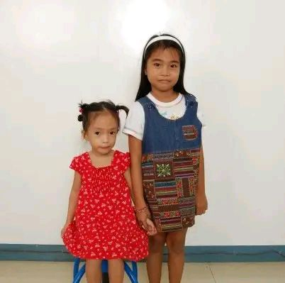
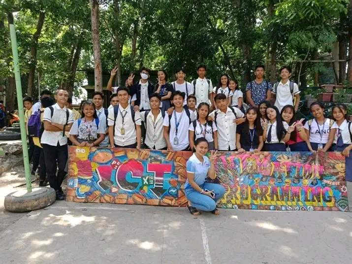
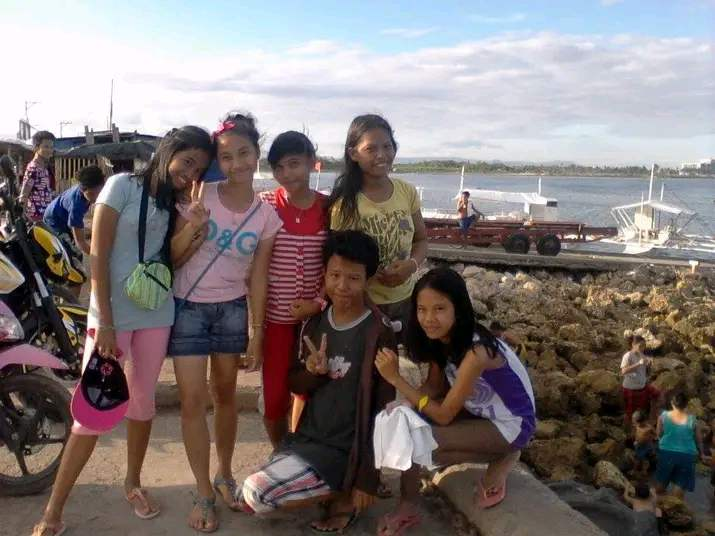
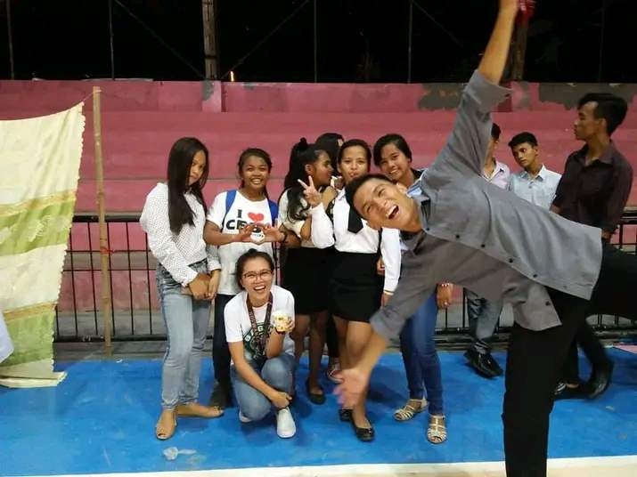
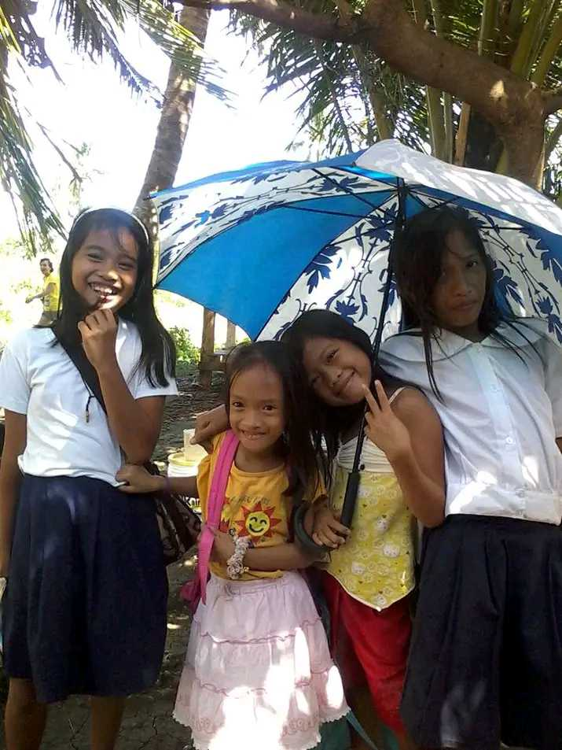

EMBRACING THE TAPESTRY OF CONFIDENCE: A CELEBRATION OF CHILDHOOD MEMORIES..
Good Morning, Good Afternoon and Good Evening everyone.. In this blog in the vast attic of our minds,
where time weaves its intricate patterns, there exists a treasure trove of memories the golden
fragments of our childhood. Close your eyes, and let the gentle breeze of nostalgia carry you back
to a time when the world was a playground of dreams, and every day held the promise of a new adventure.
Childhood, with its kaleidoscope of laughter, wonder, and innocence, is a sanctuary of recollections that
evoke the warmth of the sun on our faces and the soft embrace of a familiar hug. Join me as we embark on a
journey back to the days when the mundane was magical, and the simplest moments etched themselves into the
tapestry of our being, laying the groundwork for the confidence we carry with us today.
Childhood memories serve as the colorful threads that weave the tapestry of our lives.
These recollections, often filled with innocence, wonder, and joy, lay the foundation for
the individuals we become.

MOST PEOPLE FELT LOST AFTER HIGH SCHOOL. SOMETIMES I FELT LIKE I'D NEVER REALLY BEEN FOUND IN THE FIRST PLACE..
In the labyrinth of high school memories, the corridors resonate with the
echoes of camaraderie, the vibrant hues of shared laughter painting the hallways
with the exuberance of youth. Each day unfolds as a new chapter, adorned with the brushstrokes
of teenage dreams that dance across the canvas of endless possibilities. The classroom becomes a stage
where the drama of academic pursuits interlaces with the subtleties of friendships, a symphony of shared
aspirations and late-night study sessions. The scent of nostalgia wafts through the air, carrying
the fragrance of cafeteria lunches, ink-stained notebooks, and the anticipation of the next big adventure.
Yet, amidst the vivid tapestry of highs, there are the shadows of challenges, the somber tones of
uncertainty and self-discovery. The palette expands to include the subtle nuances of heartbreaks,
triumphs, and the resilience that emerges from facing the complexities of adolescence.

CHILDHOOD IS THE BEST OF ALL THE SEASONS OF LIFE, AND THE LONGER IT LASTS WITH HAPPY MEMORIES..
The first picture of my beloved sister is a cherished moment etched in the tapestry of my heart.
The canvas of this memory is adorned with the vibrant hues of pure joy, each stroke revealing the
innocence that defines the early chapters of our shared journey. Her laughter, captured in that frame,
resonates like a melodic echo, a soundtrack to the carefree days of childhood. The genuine mirth
encapsulated in her expression reflects the unfiltered delight of a moment untarnished by the complexities
of the world—a laughter that reverberates with the shared joy of siblings, secret jokes, and unspoken
understanding. In the sparkle of her eyes, there's a story untold—a twinkle that mirrors the
adventures, mischiefs, and shared dreams woven into the fabric of our bond. Those eyes hold the
promise of an everlasting connection, a silent pact between siblings to navigate the journey of life together.

ODYSSEY OF ADOLESCENCE: NAVIGATING THE HIGH SCHOOL YEARS..
High school memories, like a complex mosaic, are a fusion of emotions—bright, tumultuous,
and undeniably transformative. They are the stepping stones that bridge the gap between
innocence and the threshold of adulthood, forever imprinted on the canvas of our lives.In the realm of graphics
design, envision a carefully crafted section as a digital masterpiece. The canvas is a playground where bold lines,
like skillful strokes of a paintbrush, carve paths that guide the viewer's gaze. Vibrant hues burst forth,
each color chosen with intent, injecting life and emotion into the visual narrative. The choice of letterforms becomes a language, articulating the essence of the content—be it playful,
formal, or impactful. Each word is a note, contributing to the overall symphony of the visual experience.
They intertwine seamlessly, forming a tapestry that not only communicates information but also
evokes emotions. It's a delicate dance where every pixel plays a role in conveying the intended message.

INNOCENCE UNVEILED: A TAPESTRY OF BEAUTIFUL MEMORIES FROM CHILDHOOD TO JOURNEY..
In the realm of friendship, comfort is a two-way street. It requires not only the ability to find solace
in the presence of a friend but also the commitment to be a source of comfort for others. It is a symbiotic
relationship where the give and take of emotional support create a harmonious balance, strengthening
the bonds that bind friends together. Comfort in friendship is a balm for the wounds inflicted by the
challenges of life. It provides a safe space where burdens can be shared, and the weight of struggles
can be collectively lifted. The empathetic embrace of a friend transforms the burdensome into the bearable,
creating a support system that stands resilient in the face of adversity.Moreover, the comfort found
in friendship extends beyond words. It is present in the unspoken gestures, the shared glances, and the
laughter that echoes through the moments of joy.

THE HIGH SCHOOL DIARIES: FROM FRESHMAN TO SENIOR, ONE CHAPTER AT A TIME..
TWords need not be carefully measured or filtered; instead, they flow naturally, creating an atmosphere where dialogue becomes
an extension of shared thoughts and emotions. In this comfort zone, conversations are not mere exchanges; they are
a dance of ideas and sentiments, resonating with mutual understanding. There laughter, captured in that frame, resonates
like a melodic echo, a soundtrack to the carefree days of childhood. The genuine mirth encapsulated in her
expression reflects the unfiltered delight of a moment untarnished by the complexities of the world—a laughter
that reverberates with the shared joy of friendship, secret jokes, and unspoken understanding.

RADIANCE OF RECOLLECTIONS: EMBARKING ON THE JOURNEY THROUGH BEAUTIFUL CHILDHOOD MEMORIES..
In the tapestry of my mind, childhood memories bloom like vibrant flowers in a sun-kissed garden.
The palette is rich with hues of laughter, painted against the canvas of endless blue skies and golden
afternoons. Each recollection is a delicate brushstroke, capturing the essence of innocence
and the simplicity of carefree days. The symphony of joy echoes in the playful whispers of friends,
the rhythmic pitter-patter of rain on a tin roof, and the comforting embrace
of familiar places. The scent of nostalgia lingers in the air, reminiscent of
freshly baked cookies and the earthy aroma of rain-soaked soil after a summer storm. These memories,
like cherished heirlooms, are held close to the heart. They are the building blocks of who I am,
a mosaic of experiences that shape my perspective and evoke a bittersweet longing for the uncomplicated
days of youth.
Comments